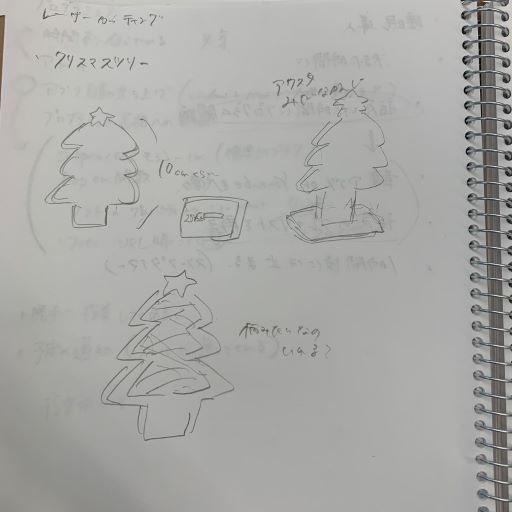
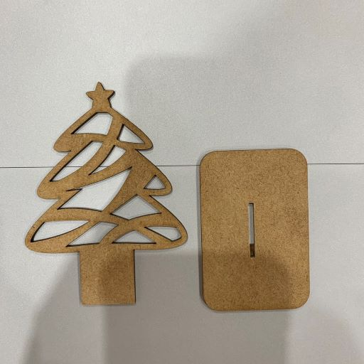
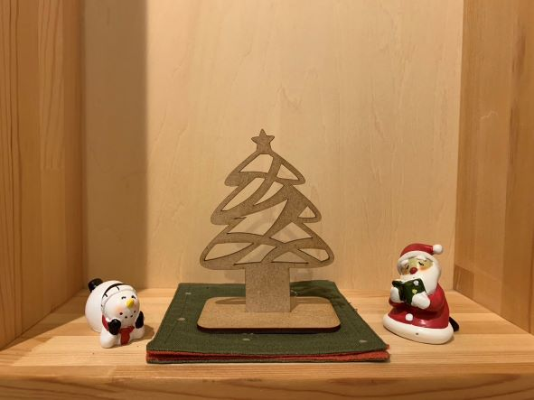
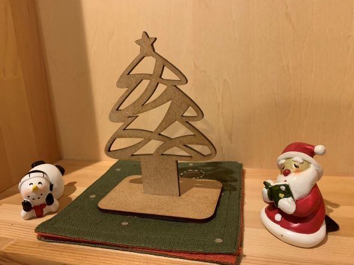
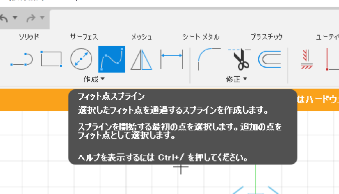

レーザーカット「クリスマスツリー」
構想段階のスケッチ、ストーリーボード

実際に作った作品の画像



設計ファイル
作品の説明
もうすぐクリスマスということで、クリスマスっぽいものを作りたいと考え、小さなクリスマスツリーを作ってみました。
最初はうまく構成を考えて、いろいろなパーツを組み合わせた立体にしたいと思いましたが、
難しかったのでアクリルスタンドのような形でツリーを立たせてみました。
fusionでのスケッチではフィット点スプラインをたくさん使いました。直感的に曲線を作ることができました。

最初はツリーの枠のみで作ろうとしていましたが、物足りなかったので中にもフィット点スプラインを使ってランダムに曲線を入れてみました。
オリジナリティとアートっぽさが出た気がするのでやって良かったです。
レーザーカッターでも、細かいところまできれいにカットすることができ、理想通りの物ができました！
クリスマスと言えばカラフルなイメージですが、色は着けずに木の色を生かし、インテリアになじみやすいツリーにしてみました。
サイズ感も机の上に置きやすいミニサイズです。家の中にさりげなくクリスマス感をプラスできる作品になったと思います。
調べたこと
前のページに戻る